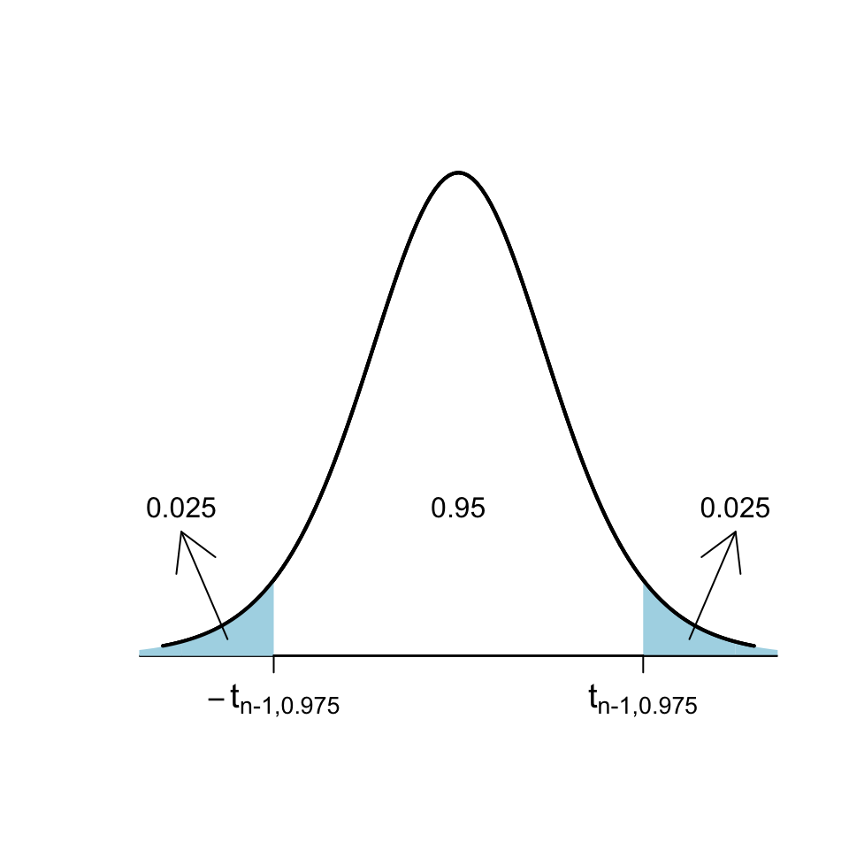
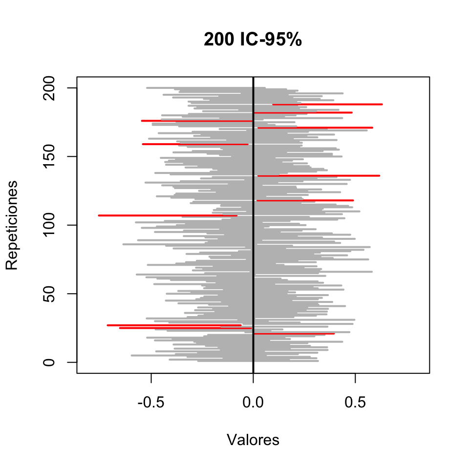
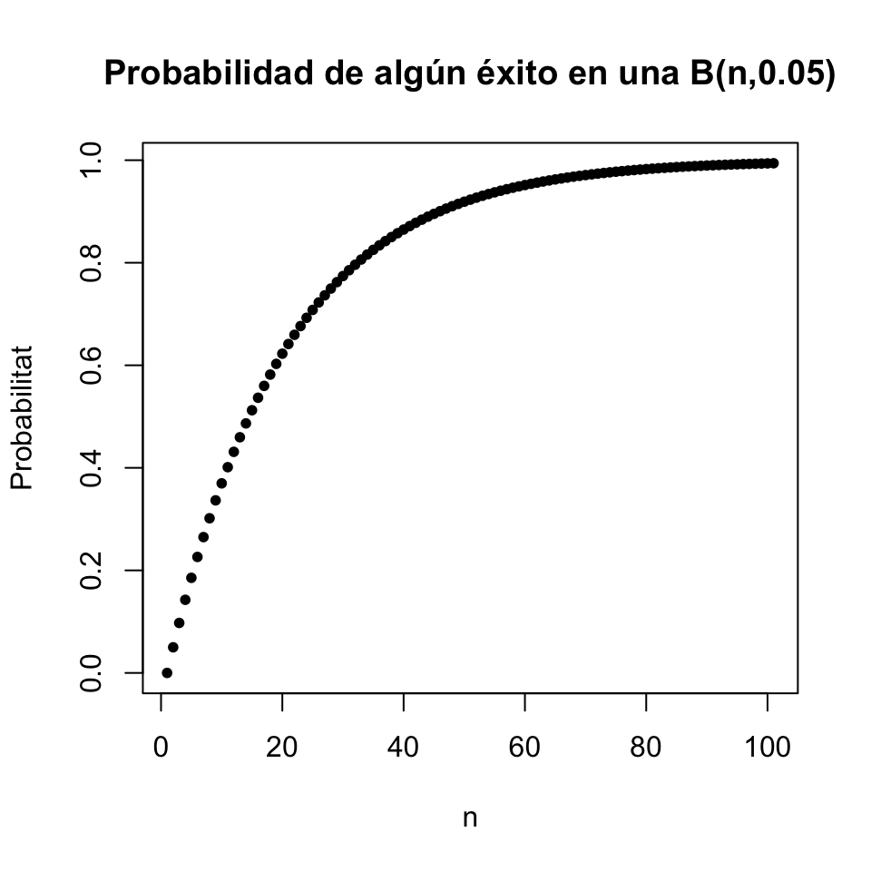
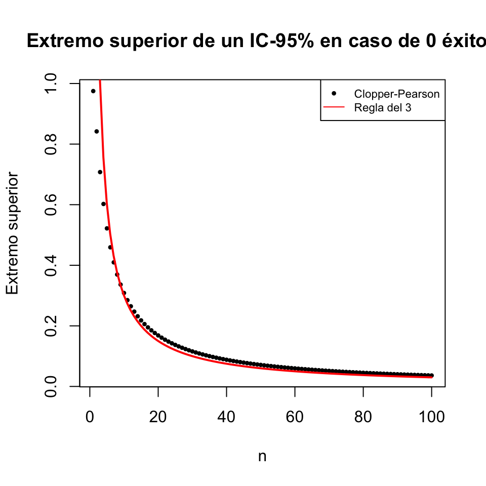
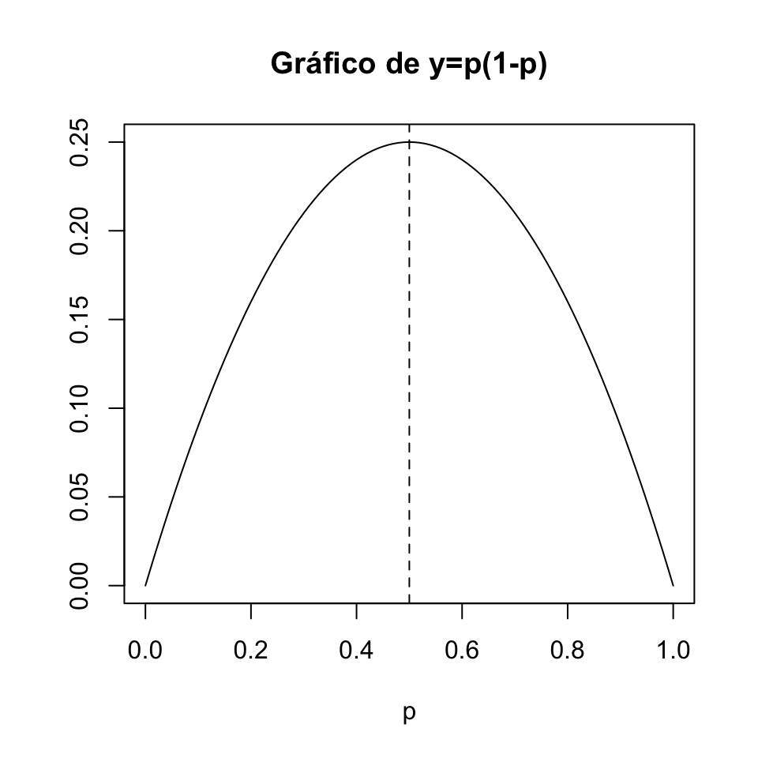

Lección 13 Intervalos de confianza
Los estimadores de la lección anterior nos permiten hacer una estimación puntual del valor de un parámetro de una variable poblacional: es decir, intentar adivinar su valor. Pero, naturalmente, es muy difícil que a partir de una muestra podamos acertar exactamente el valor del parámetro. Las técnicas de la estadística inferencial nos permiten entonces cuantificar la precisión de esta estimación. Esto se hace complementando la estimación puntual con un intervalo alrededor de la misma donde “estemos muy seguros de que cae el valor real del parámetro”.
Figura 13.1: elEconomista.es, 27/5/2019
Obviamente, no es necesario saber estadística para dar un intervalo donde estemos muy seguros de que cae el valor real del parámetro. Basta dar un intervalo lo bastante grande como para contener todos los valores razonables del parámetro.

De lo que se trata es de dar un intervalo lo más estrecho posible donde estemos muy seguros que cae el valor real del parámetro. El tamaño de este intervalo dependerá:
De la variabilidad del estimador: cuánta más variabilidad tenga, menos precisa será la estimación. Normalmente, la variabilidad del estimador crece con la desviación típica de la variable poblacional y decrece con el tamaño de las muestras.
Del nivel de confianza, o seguridad: cómo de seguros queremos estar de que el valor real del parámetro pertenece al intervalo que damos. Cuánto más seguros queramos estar, más ancho tendrá que ser el intervalo.
13.1 Definiciones básicas
Un intervalo de confianza del Q% (para abreviar, un IC-Q%) de un parámetro poblacional es un intervalo obtenido aplicando a una muestra aleatoria simple de tamaño \(n\) una fórmula que satisface la propiedad siguiente:
El intervalo obtenido contiene el valor del parámetro poblacional el Q% de las veces que aplicamos la fórmula a muestras aleatorias simples de tamaño \(n\) tomadas al azar.
Tener una confianza del Q% significa pues que lo calculamos con una fórmula que acierta el Q% de las veces que la aplicamos.
Pero asumimos que en un (100-Q)% de las veces da un intervalo que no contiene el valor del parámetro poblacional, y no sabemos cuándo sí y cuándo no. De manera que solo podemos tener una cierta confianza, fruto del optimismo, de que esta fórmula con nuestra muestra acierta.
Ejemplo 13.1 En un experimento medimos el porcentaje de aumento de alcohol en sangre a 40 personas después de tomar 4 cañas de cerveza. En el Ejemplo 13.3 calcularemos con los datos obtenidos en este experimento un IC-95% para el porcentaje de aumento medio de alcohol en sangre de una persona después de beber 4 cañas de cerveza. Obtendremos el intervalo [40.53, 41.87].
Esto significará que tenemos un 95% de seguridad en que el aumento medio de alcohol en sangre de una persona después de beber 4 cañas de cerveza está entre el 40.53% y el 41.87%, porque habremos calculado este intervalo con una fórmula que el 95% de las veces que la aplicamos a muestras aleatorias de tamaño 40 da un intervalo que contiene la media poblacional que queremos estimar. Nosotros somos optimistas y “confiamos” estar dentro de este 95% de aciertos.
A menudo esto lo escribiremos diciendo que:
Hay un 95% de probabilidad de que el intervalo [40.53, 41.87] contenga el valor real del aumento medio de alcohol en sangre de una persona después de beber 4 cañas de cerveza.
Pero hay que entender lo que dice esta frase:
Por definición, un 95% de los intervalos de confianza del 95% para el aumento medio de alcohol etc. contienen el valor real de este aumento medio.
[40.53, 41.87] es un intervalo de confianza del 95% para el aumento medio de alcohol etc., obtenido a partir de una muestra aleatoria.
Entonces, [40.53, 41.87] tiene una probabilidad del 95% de contener el valor real del aumento medio de alcohol etc. en el mismo sentido que si un 95% de las personas tienen una determinada característica, y cojo una persona al azar, esta persona tiene un 95% de probabilidad de tener esa característica.
No confundáis:
Intervalo de referencia del Q% para una variable aleatoria: Intervalo que contiene el valor de la variable aleatoria en un individuo con probabilidad Q%.
Intervalo de confianza del Q% para un parámetro: Intervalo que contiene el valor poblacional del parámetro de la variable aleatoria “con probabilidad” Q%, en el sentido de que lo hemos calculado con una fórmula que da un intervalo que contiene el parámetro el Q% de las veces que la aplicamos a una muestra aleatoria.
Intervalo de referencia del Q% para un estimador: Intervalo que contiene el valor del estimador sobre una muestra aleatoria con probabilidad Q%.
Por ejemplo:
Si decimos que un intervalo de referencia del 95% para la concentración de una proteína en suero en individuos sanos tamaño en g/dl es [11,16], esto significa
- que un 95% de los individuos sanos tienen una concentración de esta proteína en suero entre 11 y 16 g/dl
es decir,
- que si escogemos al azar un individuo sano, la probabilidad de que su concentración de esta proteína en suero esté entre 11 y 16 g/dl es del 95%.
Si decimos que un intervalo de confianza del 95% para la concentración media de una proteína en suero en individuos sanos tamaño en g/dl es [11,16], esto significa
- que este intervalo tiene un 95% de probabilidad de contener la concentración media de esta proteína en suero en individuos sanos tamaño en g/dl,
en el sentido de que lo hemos obtenido aplicando a una muestra aleatoria de concentraciones de esta proteína en suero en individuos sanos una fórmula que da un intervalo que contiene la media poblacional un 95% de las veces que la aplicamos a muestras aleatorias del mismo tamaño que la nuestra.
Si decimos que el 95% de las muestras de 100 concentraciones de una determinada proteína en suero en individuos sanos tienen la media muestral entre 11 y 16 g/dl, esto es un intervalo de referencia del 95% para la media muestral de muestras de tamaño 100, no un intervalo de confianza para la concentración media poblacional ni un intervalo de referencia para el valor de la concentración en un individuo.
A menudo calcularéis un intervalo de confianza del Q% para un cierto parámetro \(\theta\) de una población, os dará \([a,b]\), y con el poco rigor con el que a veces os expresáis, os será igual decir
“el valor real de \(\theta\) tiene una probabilidad del Q% de pertenecer a \([a,b]\)”
que
“\([a,b]\) tiene una probabilidad del Q% de contener el valor real de \(\theta\)”
Pero estas dos frases no dicen exactamente lo mismo, y de hecho la primera es falsa. Fijaos en que, en la primera frase hablamos de la probabilidad de que a \(\theta\) le pase algo, y en la segunda de que a \([a,b]\) le pase algo.
La primera frase dice que \(\theta\) varía y un Q% de sus valores pertenece a \([a,b]\). Esto es falso. “El valor real de \(\theta\)” es un número que no varía. Para nuestra población vale algo concreto, desconocido pero concreto, que pertenecerá o no al intervalo \([a,b]\).
La segunda frase en cambio se puede entender de la manera siguiente. El intervalo \([a,b]\) forma parte de toda la población de intervalos de confianza del Q% para \(\theta\) calculados a partir de muestras aleatorias simples de nuestra población. Un Q% de estos intervalos contiene el valor real de \(\theta\). Por lo tanto, podemos decir que nuestro intervalo \([a,b]\) tiene una probabilidad del Q% de contener el valor real de \(\theta\). Esta interpretación es correcta.
Figura 13.2: Un intervalo de confianza es como el juego de las anillas: el palo (el parámetro) es fijo, y intentas acertar con la anilla (el intervalo).
Que un IC-Q% para un parámetro \(\theta\) sea \([a,b]\) sirve:
Para estimar \(\theta\) con este margen de confianza: Estamos bastante seguros de que el valor poblacional de \(\theta\) está entre \(a\) y \(b\) (porque la fórmula usada acierta a menudo).
Para descartar, con este margen de confianza, que \(\theta\) valga cualquier valor concreto fuera de \([a,b]\): Estamos bastante seguros de que el valor real de \(\theta\) no está ni por debajo de \(a\) ni por encima de \(b\) y por tanto de que es diferente de cualquier valor menor que \(a\) o mayor que \(b\).
Por ejemplo: si un IC-95% para la prevalencia \(p\) de una determinada enfermedad en una población va de 0.025 a 0.047:
Estamos muy (“un 95%”) seguros de que \(p\) está entre 0.025 y 0.047 (porque un 95% de los IC-95% para \(p\) contienen el valor real de \(p\)).
Estamos muy (“un 95%”) seguros de que \(p\) no vale 0.05 (porque 0.05 no pertenece al intervalo donde estamos muy seguros de que cae el valor real de \(p\)).
Pero no estamos muy seguros de que \(p\) sea 0.03, por mucho que \(0.03\in [0.025,0.047]\): estamos muy seguros de que \(p\) está entre 0.025 y 0.047, pero solo eso.
Hay dos tipos de métodos básicos de cálculo de intervalos de confianza a partir de una muestra aleatoria:
Paramétricos: Usando alguna fórmula basada en la distribución muestral del estimador. Se basan en teoremas y solo tiene sentido usarlos si la variable aleatoria y la muestra aleatoria satisfacen (aproximadamente) las hipótesis de los teoremas.
No paramétricos. Los otros. El más popular, y nuestro favorito, es el bootstrap:
- De nuestra muestra, tomamos al azar muchas (miles de) muestras aleatorias simples (permitiendo repeticiones) del mismo tamaño que nuestra muestra.
- Calculamos el estimador para cada una de estas muestras.
- Usamos el vector de resultados para estimar un intervalo de confianza. Por ejemplo, tomamos como IC-95% el intervalo entre los cuantiles 0.025 y 0.975 de este vector.
El bootstrap se puede usar siempre y funciona bien si la muestra es aleatoria, pero se basa en un proceso aleatorio y por lo tanto cada ejecución sobre una misma muestra puede dar un intervalo diferente.
Figura 13.3: En inglés, la bootstrap es la trabilla de la bota, y el método del bootstrap refiere a la expresión inglesa “elevarse tirando de las trabillas”.
13.2 Un ejemplo: IC-95% para la media de una variable aleatoria normal
Una de las fórmulas más conocidas para intervalos de confianza es la siguiente:
Este intervalo a veces lo escribiremos \[ \overline{X}\pm t_{n-1,0.975}\cdot \frac{\widetilde{S}_X}{\sqrt{n}} \] para recalcar que estamos estimando \(\mu\) por medio de \(\overline{X}\) más o menos un cierto error.
Vamos a explicar de dónde sale esta fórmula, puesto que es un paradigma de cómo se obtienen la mayoría de las fórmulas paramétricas para intervalos de confianza. Quien se la quiera tomar como dogma de fe, que salte directamente al Ejemplo ??.
Supongamos pues que \(X\) es \(N(\mu,\sigma)\) y que tenemos una muestra aleatoria simple de tamaño \(n\), media muestral \(\overline{X}\) y desviación típica muestral \(\widetilde{S}_X\). En esta situación, sabemos que \[ T=\frac{\overline{X}-\mu}{\widetilde{S}_{X}/\sqrt{n}} \] tiene distribución t de Student con \(n-1\) grados de libertad, \(t_{n-1}\).
Si podemos encontrar \(A,B\in \mathbb{R}\) tales que \[ P(A\leqslant T\leqslant B)=0.95, \] entonces: \[ \begin{array}{rl} 0.95\!\!\!\! & =P\Bigg(A\leqslant \dfrac{\overline{X}-\mu}{\widetilde{S}_{X}/\sqrt{n}}\leqslant B\Bigg)\\[2ex] & =P\Bigg(A\cdot \dfrac{\widetilde{S}_X}{\sqrt{n}}\leqslant \overline{X}-\mu \leqslant B\cdot \dfrac{\widetilde{S}_X}{\sqrt{n}}\Bigg)\\[2ex] & =P\Bigg(-\overline{X}+A\cdot \dfrac{\widetilde{S}_X}{\sqrt{n}}\leqslant -\mu \leqslant -\overline{X}+B\cdot \dfrac{\widetilde{S}_X}{\sqrt{n}}\Bigg)\\[2ex] & =P\Bigg(\overline{X}-B\cdot \dfrac{\widetilde{S}_X}{\sqrt{n}}\leqslant \mu \leqslant \overline{X}-A\cdot \dfrac{\widetilde{S}_X}{\sqrt{n}}\Bigg) \end{array} \]
Como \(P(A\leqslant T\leqslant B)=0.95\) significa que para el 95% de las muestras aleatorias simples de tamaño \(n\) el valor de \(T\) está entre \(A\) y \(B\), \[ P\Bigg(\overline{X}-B\cdot \frac{\widetilde{S}_X}{\sqrt{n}}\leqslant \mu \leqslant \overline{X}-A\cdot \frac{\widetilde{S}_X}{\sqrt{n}}\Bigg)=0.95 \] significará que para el 95% de las muestras aleatorias simples de tamaño \(n\) la \(\mu\) cae dentro del intervalo \[ \Bigg[\overline{X}-B\cdot \frac{\widetilde{S}_X}{\sqrt{n}},\ \overline{X}-A\cdot \frac{\widetilde{S}_X}{\sqrt{n}}\Bigg] \] Por lo tanto, ¡esto será un IC-95% para \(\mu\)!
Nos falta encontrar los \(A,B\) tales que \(P(A\leqslant T\leqslant B)=0.95\). Para encontrarlos, usaremos cuantiles de la distribución de \(T\). Recordemos que, por definición de cuantil, \[ P(T\leqslant t_{n-1,0.975})=0.975 \] y por la simetría de la \(t\) de Student, \[ P(T\leqslant -t_{n-1,0.975})=P(T\geqslant t_{n-1,0.975})=0.025 \] Por tanto: \[ \begin{array}{l} P(-t_{n-1,0.975}\leqslant T\leqslant t_{n-1,0.975})\\ \quad =P(T\leqslant t_{n-1,0.975})-P(T\leqslant -t_{n-1,0.975})\\ \quad =0.975-0.025=0.95 \end{array} \]

Así pues, podemos tomar \[ A=-t_{n-1,0.975},\quad B=t_{n-1,0.975} \] y obtenemos el IC-95% para \(\mu\) anunciado: \[ \Bigg[\overline{X}-t_{n-1,0.975}\cdot \frac{\widetilde{S}_X}{\sqrt{n}},\ \overline{X}+t_{n-1,0.975}\cdot\frac{\widetilde{S}_X}{\sqrt{n}}\Bigg] \]
Ejemplo 13.2 Hagamos un experimento para ver que, efectivamente, esta fórmula “acierta”, en el sentido de que el intervalo que produce contiene la \(\mu\), alrededor del 95% de las veces. En el bloque de código de R siguiente:
Generamos al azar una
Poblaciónde 107 “individuos” que siguen una ley normal estándar y calculamos la mediamude esta población.Definimos una función
ICque calcula el IC-95% para la media \(\mu\) con la fórmula anterior.Tomamos, al azar, 200 muestras aleatorias simples de tamaño 50 de nuestra población y les aplicamos esta función. Obtenemos una matriz
Mde 200 columnas formadas por los dos extremos de los intervalos.Dibujamos los intervalos de confianza en un gráfico, donde aparecerán en gris los que contienen el valor “poblacional” de
muy en rojo los que no lo contienen. La recta vertical marca el valor demu.
Población=rnorm(10^7)
mu=mean(Población)
mu## [1] 0.0002423589IC=function(x){
n=length(x)
mean(x)+qt(0.975,n-1)*sd(x)/sqrt(n)*c(-1,1)}
M=replicate(200,IC(sample(Población,50,replace=TRUE)))
plot(1,type="n",xlim=c(-0.8,0.8),ylim=c(0,200),
xlab="Valores",ylab="Repeticiones", main="200 IC-95%")
seg.int=function(i){color="grey";
if((mu<M[1,i]) | (mu>M[2,i])){color="red"}
segments(M[1,i],i,M[2,i],i,col=color,lwd=2)}
sapply(1:200,FUN=seg.int)
abline(v=mu,lwd=2)
Si contáis los intervalos rojos, veréis que hemos fallado 11 veces y por lo tanto hemos acertado 189 veces, es decir, en un 94.5% de los intervalos. Es aproximadamente lo que esperábamos. Si lo probáis en casa, ejecutando el código de R que hemos dado, obtendréis otros resultados, a veces mejores, a veces peores. Es lo que tiene la aleatoriedad. (Si queréis obtener exactamente nuestro gráfico, justo antes de Población=rnorm(10^7) ejecutad set.seed(1200).)
Queremos remarcar que, en nuestra simulación, de los 200 IC-95% que hemos calculado, 11 no han contenido el valor real de \(\mu\). Un intervalo de confianza no siempre acierta.
Por ejemplo, de media, un 5% de las veces que calculemos un IC-95%, el parámetro poblacional no pertenecerá al intervalo obtenido.
Por lo tanto, si calculamos \(n\) IC-95% sobre muestras aleatorias simples independientes, el número de veces que el intervalo resultante no contendrá el parámetro poblacional seguirá una distribución binomial \(B(n,0.05)\). El gráfico siguiente representa el valor de \(P(X\geqslant 1)\) para una variable aleatoria \(X\) de tipo \(B(n,0.05)\), para \(n=0,...,100\), y por lo tanto la probabilidad de que si calculamos \(n\) IC-95% sobre muestras aleatorias simples independientes, al menos uno de ellos no contenga el parámetro poblacional deseado.

Esto es un problema grave en artículos científicos donde se calculen intervalos de confianza para muchos parámetros. De media, uno de cada veinte IC-95% que se calculan no contiene el valor real del parámetro que se pretende estimar. Y no se puede hacer nada al respecto, forma parte de la definición. Si queréis bajar este porcentaje de errores, hay que aumentar el nivel de confianza y los intervalos serán más anchos y por lo tanto menos útiles.
Ejemplo 13.3 Volvamos al experimento en el que medimos el porcentaje de aumento de alcohol en sangre a 40 personas después de tomar 4 cañas de cerveza. La media y la desviación típica muestral de estos porcentajes de incremento fueron \[ \overline{x}=41.2,\quad \widetilde{s}=2.1. \]
Para calcular un IC-95% para el porcentaje medio de aumento de alcohol en sangre después de tomar 4 cañas de cerveza, \(\mu\) para abreviar, supondremos que la variable aleatoria de interés (de la que queremos estimar la media) \(X\), que es “Tomamos una persona, bebe 4 cañas de cerveza y medimos el porcentaje de aumento de alcohol en sangre tras beberlas”, es normal y que la muestra que hemos tomado de esta variable es aleatoria simple.
Entonces, como \(t_{n-1,0.975}\)=qt(0.975,39)=2.0227, un IC-95% para \(\mu\) es
\[
41.2\pm 2.0227\cdot \frac{2.1}{\sqrt{40}}\Rightarrow 41.2\pm 0.67\Rightarrow [40.53, 41.87]
\]
Por lo tanto, estimamos con un 95% de confianza que el porcentaje medio de aumento de alcohol en sangre después de tomar 4 cañas de cerveza está entre el 40.5% y el 41.9%, o que es del 41.2% más menos 0.7 puntos porcentuales.
Para calcular el intervalo anterior hemos supuesto que la variable poblacional “Porcentaje de aumento de alcohol en sangre después de tomar 4 cañas de cerveza” sigue una distribución normal. ¿Y si no fuera normal?
En este caso, como el tamaño de la muestra \(n=40\) es lo bastante grande como para poder invocar el Teorema Central del Límite, el Teorema 13.2 de la próxima sección nos dice que el intervalo obtenido sigue siendo (aproximadamente) un intervalo de confianza del 95% para \(\mu\).
Si \(n\) fuera pequeño y \(X\) muy diferente de una normal, no se puede usar esta fórmula y habría que buscarse la vida (por ejemplo, usar el método bootstrap).
También hemos supuesto que era una muestra aleatoria simple. ¿Y si no lo es?
Si es aleatoria, como la población sobre la que tenemos definida nuestra variable aleatoria, las personas que pueden tomar 4 cañas de cerveza, es muy grande, a efectos prácticos la podemos considerar simple.
Pero seguro que no es aleatoria, sino oportunista. En este caso, no hemos sacado 40 personas por sorteo de la lista de toda la población mundial, ni siquiera de la de Mallorca, sino que hemos buscado voluntarios. Entonces, no podemos hacer nada para salvar la fórmula, y su validez depende de si la muestra de personas usada puede pasar por aleatoria o no.
13.3 Intervalo de confianza para la media basado en la t de Student
El mismo argumento de la sección anterior, cambiando 0.95 por \(q\), da:
Teorema 13.1 Si \(X\) es \(N(\mu,\sigma)\) y tomamos una muestra aleatoria simple de tamaño \(n\), un IC-\(q\) para \(\mu\) es \[ \overline{X}\pm t_{n-1,(1+q)/2}\cdot \frac{\widetilde{S}_X}{\sqrt{n}} \]
La fórmula de la sección anterior es un caso particular de esta, porque en los IC-0.95, \(q=0.95\) y por lo tanto \((1+q)/2=1.95/2=0.975\).
Usando el Teorema Central del Límite y algunas aproximaciones, se tiene el siguiente resultado:
Teorema 13.2 Si \(X\) es una variable aleatoria cualquiera de media poblacional \(\mu\) y tomamos una muestra aleatoria simple de \(X\) de tamaño \(n\) grande (digamos, de 40 o más elementos), entonces, un IC-\(q\) para \(\mu\) es aproximadamente \[ \overline{X}\pm t_{n-1,(1+q)/2}\cdot \frac{\widetilde{S}_X}{\sqrt{n}} \]
La aproximación del teorema anterior es mejor cuanto mayor sea \(n\) o cuanto más próxima a una normal sea la variable poblacional \(X\).
En resumen:
Observad que la estructura del IC-\(q\) para \(\mu\) dado por esta fórmula es
estimador \(\pm\) (\(\frac{1+q}{2}\)-cuantil de la distr. muestral)\(\times\)(error típico de la muestra)
Esta estructura es muy típica (pero no universal: no creáis que todos los intervalos de confianza paramétricos tienen esta forma) y cumple que:
El intervalo de confianza está centrado en la estimación puntual.
La “probabilidad de equivocarnos” se reparte por igual a los dos lados del intervalo: de media, en una fracción \((1-q)/2\) de las veces que se aplica la fórmula, el valor real del parámetro cae a la izquierda del extremo inferior y en otra fracción \((1-q)/2\) de estas ocasiones cae a la derecha del extremo superior.
Esto es general, para todos los intervalos de confianza paramétricos. El motivo intuitivo es que, para estar más seguros de que un intervalo contiene un valor, el intervalo tiene que ser más ancho. En un intervalo de confianza con la estructura descrita hace un momento, el motivo matemático es que a mayor \(q\), mayor \((1+q)/2\)-cuantil de la distribución muestral.
Por ejemplo, en el Ejemplo 13.3, teníamos \(n=40\), \(\overline{x}=41.2\) y \(\widetilde{s}=2.1\):
El IC-95% tiene \(q=0.95\), por lo tanto \(t_{n-1,(1+q)/2}=t_{39,0.975}=2.02\), y daba \[ 41.2\pm 2.02\cdot \frac{2.1}{\sqrt{40}}\Rightarrow 41.2\pm 0.67 \]
El IC-99% tiene \(q=0.99\), por lo tanto \(t_{n-1,(1+q)/2}=t_{39,0.995}=2.71\), y da \[ 41.2\pm 2.71\cdot \frac{2.1}{\sqrt{40}}\Rightarrow 41.2\pm 0.9 \] más ancho
Pero si cambiamos de muestra (o de fórmula, si hay más de una) para calcular el intervalo de confianza, puede pasar cualquier cosa.
13.4 Intervalos de confianza para proporciones
Supongamos que tenemos una variable Bernoulli \(X\) con probabilidad poblacional de éxito \(p_X\) desconocida. Queremos calcular un intervalo de confianza para \(p_X\). Para hacerlo, tomamos una muestra aleatoria simple de \(X\) de tamaño \(n\), con número de éxitos \(S\) y por tanto proporción muestral de éxitos \(\widehat{p}_{X}=S/n\).
Explicaremos los tres métodos más populares para calcular este intervalo de confianza:
El método exacto de Clopper-Pearson, que se puede aplicar siempre pero suele dar intervalos de confianza más anchos de lo necesario (o dicho de otra manera, de “más confianza” de la que pedíamos).
El método aproximado de Wilson, que se puede usar cuando la muestra es grande, digamos que de tamaño 40 o más. Su fórmula se basa en que, por el Teorema Central del Límite, la proporción muestral de muestras aleatorias simples grandes sigue una distribución aproximadamente normal.
El método aproximado de Laplace, que es una simplificación del método de Wilson, pero solo se puede usar cuando la muestra es bastante más grande, digamos que de tamaño 100 o más, y la proporción muestral \(\widehat{p}_{X}\) no es muy próxima ni a 0 ni a 1. Es el método más clásico y conocido.
Los tres métodos solo valen para muestras aleatorias simples, o al menos que puedan pasar por aleatorias simples.
Método “exacto” de Clopper-Pearson
Este método se basa en que el número de éxitos \(S\) en muestras aleatorias simples de tamaño \(n\) de \(X\) tiene una distribución conocida: es binomial \(B(n,p_X)\). Razonando de manera similar a cómo obteníamos el intervalo para \(\mu\) basado en la t de Student se llega a una fórmula de un intervalo de confianza para \(p_X\) que os vamos a ahorrar, ya que nunca se aplica “a mano”.
Este método tiene la ventaja de que se puede usar siempre, independientemente del tamaño de la muestra, y es “exacto” porque se basa en la distribución exacta de \(S\). Pero tiene algunos inconvenientes:
- Como los números de éxitos en muestras de tamaño fijo avanzan a saltos (0, 1, 2, 3,…), suele dar intervalos de confianza más anchos de lo necesario.
- Los intervalos que produce no son de la forma “probabilidad muestral \(\pm\) algo”.
- Se necesita un ordenador para calcularlo, no basta una calculadora.
Con R, se calcula con la función binom.exact del paquete epitools. Su sintaxis es
binom.exact(x,n,conf.level)donde x y n representan, respectivamente, el número de éxitos y el tamaño de la muestra, y conf.level es nuestra \(q\), el nivel de confianza en tanto por uno. El valor por defecto de conf.level es 0.95, por lo que no hace falta especificarlo si queréis calcular un IC-95%.
Método aproximado de Wilson
Supongamos ahora que tomamos una muestra aleatoria simple de \(X\) de tamaño \(n\) grande, pongamos \(n\geqslant 40\), y proporción muestral de éxitos \(\widehat{p}_{X}\). En estas condiciones, por el Teorema Central del Límite, sabemos que la distribución de \[ Z=\dfrac{\widehat{p}_{X}-p_X} {\sqrt{\frac{p_X(1-p_X)}{n}}} \] es aproximadamente la de una \(N(0,1)\). Por lo tanto \[ P\Big(-z_{(1+q)/2}\leqslant \dfrac{\widehat{p}_{X}-p_X} {\sqrt{\frac{p_X(1-p_X)}{n}}}\leqslant z_{(1+q)/2}\Big)\approx q \]
Despejando \(p_X\) como en el cálculo del IC-95% para la \(\mu\) usando la t de Student, obtenemos el resultado siguiente (que no hay que saber, tranquilos):
Teorema 13.3 Si \(n\) es grande, un IC-\(q\) para \(p_X\) es aproximadamente: \[ \frac{\widehat{p}_{X}+\frac{z_{(1+q)/{2}}^2}{2n}}{1+\frac{z_{(1+q)/{2}}^2}{n}}\pm z_{(1+q)/{2}}\cdot \frac{\sqrt{\frac{\widehat{p}_{X}(1-\widehat{p}_{X})}{n}+\frac{z_{(1+q)/{2}}^2}{4n^2}}}{1+\frac{z_{(1+q)/{2}}^2}{n}} \]
Podéis calcular este intervalo con la función binom.wilson del paquete epitools. Su sintaxis es
binom.wilson(x,n,conf.level)con los mismos parámetros que binom.exact.
Fijaos en que:
- Este método no se puede usar con muestras de cualquier tamaño, han de ser lo bastante grandes como para poder invocar el Teorema Central del Límite.
- El centro del intervalo no es \(\widehat{p}_X\).
- Se basa en la aproximación a la normal dada por el Teorema Central del Límite, y por lo tanto el intervalo resultante es un intervalo de confianza “aproximado”, no exacto como el de Clopper-Pearson. Esto no es un gran problema, porque total, la muestra usada seguramente tampoco será aleatoria simple.
Fórmula de Laplace
Supongamos finalmente que tomamos una muestra aleatoria simple de \(X\) de tamaño \(n\) todavía más grande y que el valor de \(\widehat{p}_{X}\) no es muy próximo ni a 0 ni a 1. Para fijar unas condiciones suficientes, supongamos que:
- \(n\geqslant 100\).
- Tanto el número de éxitos, \(S\), como el número de fracasos, \(n-S\), en la muestra son \(\geqslant 10\).
En este caso, en la fórmula del intervalo de Wilson los términos \(z_{(1+q)/{2}}^2/n\) son despreciablemente pequeños comparados con los otros. Si los igualamos a 0, obtenemos la fórmula siguiente:
Teorema 13.4 En las condiciones explicadas, un IC-\(q\) para \(p_X\) es aproximadamente \[ \widehat{p}_{X}\pm z_{(q+1)/2}\sqrt{\frac{\widehat{p}_{X} (1-\widehat{p}_{X})}{n}} \]
Esta fórmula es la más popular, y forma parte de la “cultura general” de un científico. De hecho, tiene más de 200 años y precede en más de 100 años a los otros dos métodos. Además, tiene la forma familiar “estimador \(\pm\) cuantil\(\times\)error típico”.
Podéis calcular este intervalo con la función binom.approx del paquete epitools. Su sintaxis es la misma que la de binom.exact y binom.wilson.
Os tenéis que saber la fórmula de Laplace, no hace falta saber las fórmulas de los otros dos métodos. Pero sí cuándo se pueden usar y cuándo no y sus ventajas e inconvenientes.
Cuando podemos calcular más de un intervalo de confianza para \(p_X\), ¿cuál calculamos?
De entrada hay que advertir que si podemos calcular más de un intervalo, seguramente los que podamos calcular darán resultados muy parecidos. Además, recordad que las tres fórmulas solo nos dan “un nivel de confianza \(q\)” si se aplican a muestras aleatorias simples, y nuestras muestras casi siempre serán oportunistas, en cuyo caso, si nos ponemos tiquismiquis, no podemos aplicar ninguna.
Solo un consejo: Si podéis usar la fórmula de Laplace, usadla. Todo el mundo lo conoce, forma parte de la cultura general del científico, y da un intervalo centrado en la proporción muestral.Ejemplo 13.4 En una muestra de 20 pacientes operados de cáncer de próstata con una nueva técnica, ninguno desarrolló complicaciones importantes en las 24 horas siguientes a la operación. ¿Cuál sería un IC-95% para la proporción de pacientes operados con esta técnica nueva que desarrollan complicaciones importantes en las 24 horas siguientes a la operación?
Para calcularlo solo podemos usar el método de Clopper-Pearson, y este es uno de los pocos casos en que este intervalo tiene una expresión analítica sencilla. Si en una muestra aleatoria simple de tamaño \(n\) de una variable \(Be(p_X)\) obtenemos 0 éxitos, el IC-\(q\) de Clopper-Pearson para \(p_X\) es \[ \Big[0,1-\Big(\frac{1-q}{2}\Big)^{1/n}\Big] \] que, si \(q=0.95\), queda \[ [0,1-0.025^{1/n}]. \] En nuestro caso, \(n=20\), da el intervalo [0,0.1684]. Por lo tanto, estimamos con un 95% de confianza que menos del 16.84% de los pacientes operados con esta técnica nueva desarrollan complicaciones importantes en las 24 horas siguientes a la operación.
Con R, hubiéramos entrado
library(epitools)
binom.exact(0,20)## x n proportion lower upper conf.level
## 1 0 20 0 0 0.1684335 0.95El intervalo que se obtiene tiene como extremo inferior el valor lower y extremo superior el valor upper.
Cuando se tiene que calcular “a mano” un intervalo de confianza del 95% para una probabilidad \(p_X\) a partir de una muestra aleatoria simple donde no ha habido ningún éxito, a menudo se usa la regla siguiente:
Regla del 3: Cuando en una muestra aleatoria simple de tamaño \(n\) de una variable aleatoria de Bernoulli de parámetro \(p_X\) no encontramos ningún éxito, un IC-95% para \(p_X\) va, aproximadamente, de 0 a \(3/n\).
Con esta regla, en nuestro ejemplo con \(n=20\) obtendríamos el intervalo [0,3/20]=[0,0.15], no muy lejos del [0,0.1684] que hemos obtenido.
Para ver como la regla del 3 aproxima el intervalo de Clopper-Pearson, el gráfico siguiente muestra los valores \(3/n\) y el extremo superior del IC-95% de Clopper-Pearson a partir de una muestra de tamaño \(n\) con 0 éxitos:

Si la muestra hubiera sido mayor, pongamos de 50 pacientes y de nuevo 0 complicaciones graves, también podríamos usar el método de Wilson. Calculémoslo con R:
binom.wilson(0,50)## x n proportion lower upper conf.level
## 1 0 50 0 0 0.0713476 0.95Da el intervalo [0,0.0713]. El método de Clopper-Pearson da en este caso
binom.exact(0,50)## x n proportion lower upper conf.level
## 1 0 50 0 0 0.07112174 0.95y la regla del 3 da [0,0.06].
El gráfico siguiente muestra los valores \(3/n\) y los extremos superiores de los IC-95% de Clopper-Pearson y de Wilson a partir de una muestra de tamaño \(n\) (\(n\geqslant 40\) para los intervalos de confianza de Wilson) con 0 éxitos:

Los extremos superiores de los intervalos de Clopper-Pearson y Wilson se superponen en este último gráfico.
Ejemplo 13.5 En un ensayo de un tratamiento de quimioterapia, en una muestra de 100 pacientes tratados, 25 desarrollaron cáncer testicular secundario. ¿Cuál es un IC-95% para la proporción de pacientes tratados con esta quimioterapia que desarrollan cáncer testicular?
En este caso podemos usar los tres métodos.
- Clopper-Pearson, porque se puede usar siempre.
- Wilson, porque \(n=100\geqslant 40\).
- Laplace, porque \(n\geqslant 100\), \(S=25\geqslant 10\) y \(n-S=75\geqslant 10\).
Vamos a aplicar a mano la fórmula de Laplace, que es la única que es sensato calcular a mano (y es la que os recomendamos usar si podéis). Tenemos que \(\widehat{p}_{X}=25/100=0.25\) y \(z_{0.975}=1.96\). Da: \[ 0.25\pm 1.96\sqrt{\frac{0.25\cdot 0.75}{100}}=0.25\pm 0.085\Rightarrow [0.165, 0.335] \] Concluimos, con un nivel de confianza del 95%, que entre aproximadamente un 16.5% y un 33.5% de los pacientes tratados con esta quimioterapia desarrollan cáncer testicular. En este caso podríamos decir que estimamos, con un nivel de confianza del 95%, que el porcentaje de pacientes tratados con esta quimioterapia que desarrollan cáncer testicular es del 25% más o menos 8.5 puntos porcentuales.
Por si os interesan:
- El intervalo de Clopper-Pearson da
binom.exact(25,100)## x n proportion lower upper conf.level
## 1 25 100 0.25 0.1687797 0.3465525 0.95- El intervalo de Wilson da
binom.wilson(25,100)## x n proportion lower upper conf.level
## 1 25 100 0.25 0.1754521 0.3430446 0.95Ya que estamos, calculamos el intervalo de Laplace con R:
binom.approx(25,100)## x n proportion lower upper conf.level
## 1 25 100 0.25 0.1651311 0.3348689 0.95Da lo mismo que a mano.
Como podéis ver, los tres dan muy parecidos, con diferencias en los extremos de un punto porcentual.
Cálculo del tamaño de la muestra para fijar el error
Llamaremos margen de error (o error, precisión…) del intervalo de confianza de Laplace a la mitad de su amplitud, es decir, a lo que sumamos y restamos a la proporción muestral para obtenerlo: \[ M= z_{(q+1)/2} \sqrt{\frac{\widehat{p}_{X} (1-\widehat{p}_{X})}{n}} \] Fijaos en que el intervalo de confianza de Laplace es \(\widehat{p}_X\pm M\) y por lo tanto, si contiene el valor real de \(p_X\), el error \(|\widehat{p}_X-p_X|\) que cometemos cuando decimos que el valor de \(p_X\) es \(\widehat{p}_X\) es como máximo este \(M\).
Una típica pregunta al diseñar un estudio es ¿de qué tamaño he de tomar la muestra para garantizar que el margen de error en la estimación sea como máximo un valor dado \(M_{max}\)? En el caso del intervalo de Laplace para una proporción, podemos dar un tamaño \(n\) que garantice un error máximo dado \(M_{max}\) valga lo que valga \(\widehat{p}_{X}\in [0,1]\).
Fijaos en que la función \(y=p(1-p)\), con \(p\in [0,1]\), es una parábola cóncava con vértice en su punto \(p=0.5\).

Por lo tanto, \(y=p(1-p)\) toma su valor máximo en \(p=0.5\). Así, pues \[ \widehat{p}_{X} (1-\widehat{p}_{X})\leqslant 0.5(1-0.5)=0.5^2 \] y por lo tanto \[ \begin{array}{l} \displaystyle M=z_{(q+1)/2} \sqrt{\frac{\widehat{p}_{X} (1-\widehat{p}_{X})}{n}}\\ \qquad\displaystyle \leqslant z_{(q+1)/2}\sqrt{\frac{0.5^2}{n}}=\frac{0.5z_{(q+1)/2}}{\sqrt{n}}=\frac{z_{(q+1)/2}}{2\sqrt{n}} \end{array} \]
Así pues, si tomamos \(n\) tal que \[ \frac{z_{(q+1)/2}}{2\sqrt{n}}\leqslant M_{max} \] entonces seguro que \(M\leqslant M_{max}\), valga lo que valga \(\widehat{p}_{X}\).
Por consiguiente, lo que haremos será calcular la \(n\) para obtener un margen de error como máximo \(M_{max}\) en el caso más desfavorable (o en el peor de los casos): cuando el intervalo da lo más ancho posible, es decir, suponiendo que \(\widehat{p}_{X}=0.5\): \[ M_{max}\geqslant \frac{z_{(q+1)/2}}{2\sqrt{n}} \Longrightarrow n\geqslant \left(\frac{z_{(q+1)/2}}{2\cdot M_{max}} \right)^2 \]
En resumen:
Teorema 13.5 Si \[ n\geqslant \left(\frac{z_{(q+1)/2}}{2\cdot M_{max}}\right)^2, \] el margen de error del intervalo de Laplace calculado con una muestra de tamaño \(n\) será como máximo \(M_{max}\).
Ejemplo 13.6 ¿Cuál es el menor tamaño de una muestra que nos garantice un margen de error de como máximo 0.05 al estimar una proporción \(p_X\) usando un intervalo de confianza de Laplace del 95%?
Por el teorema anterior, para garantizar un margen de error de 0.05 al calcular un IC-95% para una proporción \(p_X\) usando la fórmula de Laplace, tenemos que usar una muestra de tamaño \(n\) tal que \[ n\geqslant \Bigg(\frac{z_{(1+q)/2}}{2M_{max}}\Bigg)^2=\Bigg(\frac{1.96}{0.1}\Bigg)^2=384.16 \]
El menor tamaño que satisface esta condición es \(n=385\).
Observad tres cosas:
El valor de \(n\) solo depende del margen de error deseado y del nivel de confianza, no de la naturaleza del estudio.
Tal y como hemos encontrado la \(n\), estamos seguros de que si tomamos una muestra como mínimo de este tamaño, el margen de error del intervalo de confianza de Laplace será como máximo \(M_{max}\), sea cual sea la muestra. ¡Es de las pocas veces que podemos estar seguros de algo en estadística!
El teorema anterior es para el intervalo de Laplace, pero la \(n\) seguramente os saldrá muy grande y en este caso el intervalo de Laplace aproxima muy bien los otros dos intervalos si la proporción muestral luego no os sale muy extrema.
“Poblaciones finitas”
En esta sección hasta ahora hemos usado muestras aleatorias simples. Ya sabemos que si tomamos muestras aleatorias sin reposición y la población es mucho más grande que el tamaño \(n\) de las muestras, las fórmulas que hemos dado siguen funcionando (aproximadamente) bien. Pero, ¿qué pasa si tomamos una muestra aleatoria sin reposición y la población no es mucho más grande que la muestra?
Por un lado, hay métodos tipo el de Clopper-Pearson que usan que el número de éxitos en muestras aleatorias sin reposición sigue una distribución hipergeométrica, pero son aun más complicados que el de Clopper-Pearson. Lo que se hace cuando se puede es usar la fórmula de Laplace teniendo en cuenta el factor de población finita:
Si \(X\) una variable aleatoria de Bernoulli \(Be(p_X)\) definida sobre una población de tamaño \(N\) y tomamos una muestra aleatoria sin reposición de \(X\), con \(n\geqslant 100\) y números de éxitos y fracasos \(\geqslant 10\), un intervalo de confianza de nivel de confianza \(q\) para \(p_X\) es, aproximadamente, \[ \widehat{p}_{X}\pm z_{(q+1)/2}\sqrt{\frac{\widehat{p}_{X} (1-\widehat{p}_{X})}{n}}\sqrt{\frac{\vphantom{(}N-n}{N-1}} \]
En las condiciones del punto anterior, para obtener un intervalo de confianza de nivel de confianza \(q\) para \(p_X\) con un margen de error \(M_{max}\) en el caso más desfavorable (\(\widehat{p}_X=0.5\)) habrá que tomar una muestra de tamaño \[ n\geqslant \frac{Nz_{(q+1)/2}^2}{4(N-1)M_{max}^2+z_{(q+1)/2}^2} \]
Ejemplo 13.7 En una muestra aleatoria de 727 estudiantes diferentes de la UIB (\(N=12000\)), 557 afirmaron haber cometido plagio en algún trabajo durante sus estudios. ¿Cuál sería un intervalo de confianza del 95% para la proporción \(p_X\) de estudiantes de la UIB que han cometido plagio en algún trabajo?
Una muestra de 727 estudiantes diferentes es muy grande respecto del total de estudiantes de la UIB, por lo cual conviene usar la fórmula de Laplace con el factor de población finita: \[ \widehat{p}_{X}\pm z_{(q+1)/2}\sqrt{\frac{\widehat{p}_{X} (1-\widehat{p}_{X})}{n}}\sqrt{\frac{\vphantom{(}N-n}{N-1}} \] donde \(\widehat{p}_{X}=557/727=0.766\), \(z_{(q+1)/2}=1.96\), \(n=727\) y \(N=12000\): da \[ 0.766\pm 1.96\sqrt{\frac{0.766(1-0.766)}{727}}\sqrt{\frac{\vphantom{(}12000-727}{12000-1}}\Rightarrow [0.736, 0.796] \] Estimamos con un nivel de confianza del 95% que entre un 73.6% y un 79.6% de los estudiantes de la UIB han cometido plagio en algún trabajo.
13.5 (Bonus track) Otros intervalos de confianza
Como os podéis imaginar, hay fórmulas paramétricas para calcular intervalos de confianza (y a veces más de una) para todos los parámetros de interés: varianza, desviación típica, RR, RA, odds ratios, etc. No vamos a dar las fórmulas de todos ellos; en la vida real, los intervalos de confianza se calculan con algún paquete estadístico. Pero al menos vamos a dar dos fórmulas muy comunes y conocidas.
13.5.1 Un intervalo de confianza para la diferencia de proporciones
Sean \(X_1\) y \(X_2\) dos variables Bernoulli de probabilidades poblacionales de éxito \(p_1\) y \(p_2\), respectivamente. Supongamos que queremos calcular un IC-\(q\) para la diferencia de estas probabilidades, \(p_1-p_2\). Para ello, tomamos dos muestras independientes, una de cada variable:
- Una muestra aleatoria simple de tamaño \(n_1\) de \(X_1\), de proporción muestral \(\widehat{p}_1\).
- Una muestra aleatoria simple de tamaño \(n_2\) de \(X_2\), de proporción muestral \(\widehat{p}_2\).
Si las dos muestras son grandes, pongamos cada una de 50 o más sujetos, y las proporciones muestrales no son muy cercanas a 0 o a 1 (para fijar ideas, que en cada muestra haya como mínimo 5 éxitos y 5 fracasos), un IC-\(q\) para la diferencia \(p_1-p_2\) es, aproximadamente, \[ \widehat{p}_1-\widehat{p}_2 \pm z_{(q+1)/2}\cdot \sqrt{\frac{n_1 \widehat{p}_1 +n_2 \widehat{p}_2}{n_1 +n_2}\cdot \frac{n_1 (1-\widehat{p}_1) +n_2( 1-\widehat{p}_2)}{n_1 +n_2}\cdot \Big(\frac{1}{n_1}+\frac{1}{n_2} \Big)} \] Notad que \(n_1 \widehat{p}_1 +n_2 \widehat{p}_2\) es el número total de éxitos y \(n_1 (1-\widehat{p}_1) +n_2( 1-\widehat{p}_2)\) el número total de fracasos en las dos muestras.
Ejemplo 13.8 En un estudio francés sobre la efectividad de la hidroxicloroquina en el tratamiento de la COVID-19 leve o moderada en personas de edad avanzada, participaron 247 pacientes de este grupo de riesgo. Se dividieron al azar en dos grupos de 124 y 123 sujetos. Los del primer grupo fueron tratados con hidroxicloroquina y los del segundo grupo, con un placebo. Se anotó en cada grupo cuántos fallecieron o necesitaron intubación en los 14 días siguientes al inicio del tratamiento (lo resumiremos en “desenlace negativo”). En el grupo tratado con hidroxicloroquina hubo 9 desenlaces negativos y en el grupo del placebo, 8.
Llamemos \(p_1\) a la probabilidad de que un paciente de edad avanzada con COVID-19 leve o moderada tratado con placebo tenga un desenlace negativo, y \(p_2\) a la correspondiente probabilidad para los tratados con hidroxicloroquina. Queremos calcular un IC-95% para la RAR de desenlace negativo con hidroxicloroquina comparado con placebo, es decir, para la diferencia \(p_1-p_2\).
Las variables de interés son:
\(X_1\): Tomamos un paciente de edad avanzada con COVID-19 leve o moderada, lo tratamos con placebo y miramos si tiene un desenlace negativo; es Bernoulli \(Be(p_1)\).
\(X_2\): Tomamos un paciente de edad avanzada con COVID-19 leve o moderada, lo tratamos con hidroxicloroquina y miramos si tiene un desenlace negativo; es Bernoulli \(Be(p_2)\).
Hemos tomado una muestra de \(X_1\) de tamaño \(n_1=123\) y ha tenido 8 éxitos, de manera que su proporción muestral ha sido \(\widehat{p}_1=8/123=0.06504\), y hemos tomado una muestra de \(X_2\) de tamaño \(n_2=124\) y ha tenido 9 éxitos, de manera que su proporción muestral ha sido \(\widehat{p}_2=9/124=0.07258\). El número total de éxitos (es decir, de desenlaces negativos) ha sido \(8+9=17\) y el de fracasos \(247-17=230\). Las dos muestras son independientes, ya que hemos asignado al azar los sujetos a uno u otro grupo.
Suponiendo que las muestras puedan pasar por aleatorias, estamos en condiciones de aplicar la fórmula anterior. Obtenemos \[ \begin{array}{l} \displaystyle 0.06504-0.07258 \pm 1.96\cdot \sqrt{\frac{17}{247}\cdot \frac{230}{247}\cdot \Big(\frac{1}{123}+\frac{1}{124} \Big)}\\ \qquad\qquad =-0.00754\pm 0.06314\Rightarrow [-0.0707, 0.0556] \end{array} \] Así pues, estimamos con un 95% de confianza que la RAR de desenlace negativo con hidroxicloroquina entre estos pacientes está entre -0.0707 y 0.0556. Es decir, estimamos con una confianza del 95% que el efecto de administrar hidroxicloroquina está entre el aumento en 7.1 puntos porcentuales del riesgo de desenlace negativo y su disminución en 5.6 puntos porcentuales. En particular, no podemos ni afirmar ni descartar que su uso mejore el pronóstico del paciente.
13.5.2 Intervalos de confianza para diferencias de medias
Sean \(X_1\) y \(X_2\) dos variables de medias \(\mu_1\) y \(\mu_2\), respectivamente. Supongamos que queremos calcular un IC-\(q\) para la diferencia de medias \(\mu_1-\mu_2\). Para ello, tomamos:
- Una muestra aleatoria simple de tamaño \(n_1\) de \(X_1\), de media muestral \(\overline{X}_1\).
- Una muestra aleatoria simple de tamaño \(n_2\) de \(X_2\), de media muestral \(\overline{X}_2\).
Si \(X_1\) y \(X_2\) son aproximadamente normales o si las muestras usadas son grandes (de nuevo, digamos, ambas de tamaño como mínimo 40), entonces podemos usar un método paramétrico basado en una distribución t de Student, que da un intervalo centrado en la diferencia de medias muestrales, de la forma \[ \overline{X}_1-\overline{X}_2\pm t_{\nu,(q+1)/2}\times\text{error típico} \]
Pero el número de grados de libertad \(\nu\) a usar en el cuantil y el error típico van a depender de dos factores.
Por un lado, de que las muestras sean independientes (hemos medido \(X_1\) y \(X_2\) sobre dos muestras obtenidas de manera independiente la una de la otra) o emparejadas (hemos medido \(X_1\) y \(X_2\) sobre los individuos de una misma muestra o hay algún emparejamiento explícito entre los sujetos de las dos muestras; en particular, si las muestras son emparejadas ha de pasar que \(n_1=n_2\)).
Y si las muestras son independientes, la fórmula a usar depende de si las varianzas de \(X_1\) y \(X_2\) son iguales o diferentes. (¿Y cómo podemos saber si son iguales o diferentes? No os perdáis las próximas lecciones.)
Os damos las fórmulas por si algún día tenéis que calcular uno a mano. No hace falta saberlas, solo recordar que la fórmula concreta a usar depende de estas condiciones. Supongamos, pues, que \(X_1\) y \(X_2\) son aproximadamente normales o que \(n_1,n_2\geqslant 40\). Entonces:
- Si las muestras son emparejadas y \(n_1=n_2=n\), un IC-\(q\) para \(\mu_1-\mu_2\) es \[ \overline{X}_1-\overline{X}_2\pm t_{n-1,(q+1)/2}\cdot \frac{\widetilde{S}_D}{\sqrt{n}} \] donde \(\widetilde{S}_D\) es la desviación típica muestral de las diferencias \(X_1-X_2\) sobre las parejas de la muestra.
Si las muestras son independientes y \(\sigma_{X_1}^2=\sigma_{X_2}^2\), un IC-\(q\) para \(\mu_1-\mu_2\) es \[ \overline{X}_1-\overline{X}_2\pm t_{n_1+n_2-2,(q+1)/2} \sqrt{\Big(\frac{1}{n_1}+\frac{1}{n_2}\Big)\cdot \frac{(n_1-1)\widetilde{S}_1^2+(n_2-1)\widetilde{S}_2^2} {n_1+n_2-2}} \] donde \(\widetilde{S}_1^2\) y \(\widetilde{S}_2^2\) son las varianzas muestrales de las muestras de \(X_1\) y \(X_2\), respectivamente.
Si las muestras son independientes y \(\sigma_{X_1}^2\neq \sigma_{X_2}^2\), un IC-\(q\) para \(\mu_1-\mu_2\) es \[ \overline{X}_1-\overline{X}_2\pm t_{\nu,(q+1)/2}\cdot\sqrt{\frac{\widetilde{S}_1^2}{n_1}+\frac{\widetilde{S}_2^2}{n_2}} \] donde, de nuevo, \(\widetilde{S}_1^2\) y \(\widetilde{S}_2^2\) son las varianzas muestrales de las muestras de \(X_1\) y \(X_2\), respectivamente, y ahora el número de grados de libertad que tenemos que usar al calcular el cuantil es \[ \nu=\frac{\displaystyle \left( \frac{\widetilde{S}_1^2}{n_1}+\frac{\widetilde{S}_2^2}{n_2}\right)^2}{\displaystyle \frac{1}{n_1-1}\left(\frac{\widetilde{S}_1^2}{n_1}\right)^2+\frac{1}{n_2-1}\left(\frac{\widetilde{S}_2^2}{n_2}\right)^2} \]
Ejemplo 13.9 Queremos calcular un intervalo de confianza del 95% para la diferencia en la temperatura media de los hombres y las mujeres. Para ello, usamos unos datos recogidos por P.A. Mackowiak, S. S. Wasserman y M.M. Levine en un estudio de 1992, en el que tomaron la temperatura a 114 hombres y 116 mujeres; las muestras de ambos sexos fueron independientes una de la otra.
Pongamos algunos nombres. Las variables aleatorias de interés son:
- \(X_h\): “Tomamos un hombre y le tomamos la temperatura, en grados C”, de media \(\mu_h\) y desviación típica \(\sigma_h\).
- \(X_m\): “Tomamos una mujer y le tomamos la temperatura, en grados C”,de media \(\mu_m\) y desviación típica \(\sigma_m\).
Vamos a calcular un IC-95% para \(\mu_h-\mu_m\). Como ambas muestras son grandes, vamos a usar una fórmula basada en la t de Student. Hemos calculado los datos siguientes:
- Para la muestra de \(X_h\), su tamaño es \(n_h=114\), su media muestral es \(\overline{X}_h=36.75\) y su varianza muestral es \(\widetilde{S}_h^2=0.228\).
- Para la muestra de \(X_m\), su tamaño es \(n_m=116\), su media muestral es \(\overline{X}_m=36.9\) y su varianza muestral es \(\widetilde{S}_m^2=0.191\).
Para calcular el IC-95%, necesitamos saber si \(\sigma_h^2=\sigma_m^2\) o \(\sigma_h^2\neq \sigma_m^2\). Vamos a suponer que \(\sigma_h^2=\sigma_m^2\), es decir, que las temperaturas de las mujeres son “igual de variadas” que las de los hombres, básicamente porque no vemos ningún motivo para que no sea así (bueno, y porque en una próxima lección veremos cómo decidir, con una cierta probabilidad de equivocarnos, si dos varianzas poblacionales son iguales o diferentes, y en concreto concluiremos que, en este caso, \(\sigma_h^2=\sigma_m^2\)).
Así que hemos de usar la fórmula para muestras independientes y varianzas iguales: \[ \overline{X}_h-\overline{X}_m\pm t_{n_h+n_m-2,0.975} \sqrt{\Big(\frac{1}{n_h}+\frac{1}{n_m}\Big)\cdot \frac{(n_h-1)\widetilde{S}_h^2+(n_m-1)\widetilde{S}_m^2} {n_h+n_m-2}} \]
donde \(t_{n_h+n_m-2,0.975}=t_{228,0.975}=1.97\). Da \[ \begin{array}{l} \displaystyle 36.75-36.9\pm 1.97 \sqrt{\Big(\frac{1}{114}+\frac{1}{116}\Big)\cdot \frac{113\cdot 0.228+115\cdot 0.191} {228}}\\ \qquad \displaystyle = -0.15\pm 0.06\Longrightarrow [-0.21,-0.09] \end{array} \] Estimamos con un 95% de confianza que la temperatura media de los hombres es entre una y dos décimas de grado C más baja que la de las mujeres.
13.6 Test
(1) En un estudio transversal sobre una muestra de 500 sujetos representativos de una comunidad, se ha observado una prevalencia de una determinada enfermedad del 20% (IC 95%: 16.5%-23.5%). ¿Cuál de las afirmaciones siguientes es correcta?
- Si tomamos otra muestra de 500 sujetos de la misma comunidad, hay un 95% de probabilidad de que el intervalo 16.5%-23.5% contenga el porcentaje de sujetos de la muestra que tienen esta enfermedad.
- Un 95% de los individuos de la comunidad tienen entre el 16.5% y el 23.5% de probabilidad de tener esta enfermedad.
- La fórmula con la que hemos obtenido el intervalo 16.5%-23.5% produce intervalos que contienen la proporción poblacional de enfermos en un 95% de las ocasiones.
- La fórmula con la que hemos obtenido el intervalo 16.5%-23.5% produce intervalos que contienen la proporción de enfermos en la muestra en un 95% de las ocasiones.
- Todas las otras respuestas son falsas.
(2) Tomamos una muestra aleatoria simple de tamaño 50 de una variable aleatoria. Calculamos un intervalo de confianza del 90% para la media de la variable aleatoria a partir de esta muestra, da [11.8,12.8]. ¿Qué significa esto?
- Que hemos obtenido este intervalo con una fórmula que el 90% de las veces da un intervalo que contiene el valor real de la variable.
- Que hemos obtenido este intervalo con una fórmula que el 90% de las veces da un intervalo que contiene el valor de la media de la muestra usada para calcularlo.
- Que hemos obtenido este intervalo con una fórmula que el 90% de las veces da un intervalo que contiene el valor de la media muestral de cualquier muestra.
- Que hemos obtenido este intervalo con una fórmula que el 90% de las veces da un intervalo que contiene el valor real de la media de la variable aleatoria.
- Ninguna de las respuestas anteriores es correcta.
(3) En un estudio transversal sobre una muestra de sujetos representativos de una comunidad, se ha observado una prevalencia de la hipertensión arterial (HTA) del 20% (intervalo de confianza del 95%: 15%-25%). ¿Cuál de las afirmaciones siguientes es verdadera?
- Se tiene un 95% de seguridad de que entre un 15% y un 25% de los sujetos de la muestra son hipertensos.
- Se tiene un 95% de seguridad de que entre un 15% y un 25% de los sujetos de la comunidad son hipertensos.
- Se tiene un 95% de seguridad de que la prevalencia de la HTA en la comunidad es del 20%.
- La prevalencia real de HTA en la comunidad se sitúa entre el 15% y el 25%.
- Ninguna de las respuestas anteriores es correcta.
(4) Un intervalo de confianza del 99% para la concentración de un determinado metabolito en sangre es [10,12]. De acuerdo con esto, esperamos encontrar fuera de este intervalo:
- Un 1% de las concentraciones medias de todas las muestras de cualquier tamaño
- Un 1% de las concentraciones medias de las muestras grandes (con \(n\geqslant 40\))
- Un 99% de las concentraciones medias de todas las muestras de cualquier tamaño
- Un 1% de todas las concentraciones en la población
- Un 99% de todas las concentraciones en la población
- Ninguna de las anteriores respuestas es correcta
(5) En un artículo publican un intervalo de confianza del 95% para una media \(\mu\) calculado con la fórmula basada en la t de Student sobre una muestra de tamaño 100: es [11.8,12.8]. ¿Qué ha valido, aproximadamente, la desviación típica muestral de la muestra?
- 12.3
- 2.5
- 3
- 6.5
- No lo podemos saber a partir de los datos dados
(6) En una muestra de 88 estudiantes, se encontró que un 8% consumían bebidas energéticas (IC 95%: 2% a 14%, método de Laplace). ¿Cuál o cuáles de las afirmaciones siguientes son ciertas?
- Otra muestra del mismo tamaño siempre mostraría una tasa de estudiantes consumidores de bebidas energéticas entre el 2% y el 14%.
- El 95% del estudiantes tiene una probabilidad de entre el 2% y el 14% de consumir bebidas energéticas.
- Estamos muy seguros de que entre el 2% y el 14% de los estudiantes consumen bebidas energéticas.
- Si la muestra hubiera sido de 880 estudiantes y también hubiera tenido un 8% de consumidores de bebidas energéticas, el intervalo de confianza del 95% hubiera sido más estrecho.
- Sería imposible obtener este IC-95% si la tasa de consumo de bebidas energéticas entre los estudiantes fuera del 20%.
(7) Tomamos una muestra aleatoria de 200 residentes de Santa Margalida (población, 12000 habitantes) para calcular un intervalo de confianza para la proporción de los margalidans que presentan una determinada condición. ¿Cuál o cuáles de las afirmaciones siguientes son verdaderas?
- Si la muestra es simple, no hay que tener en cuenta el factor de población finita.
- Aunque la muestra sea simple, hay que tener en cuenta el factor de población finita.
- Si la muestra no es simple, hay que tener en cuenta el factor de población finita.
- Una muestra aleatoria sin reposición de tamaño 200 de una población de tamaño 12000 siempre podemos entender que es simple, a efectos de calcular intervalos de confianza de proporciones.
- Todas las otras respuestas son falsas.
(8) Estamos calculando intervalos de confianza para la probabilidad de éxito de una variable de Bernoulli a partir de muestras aleatorias simples del mismo tamaño usando la fórmula de Laplace. Sobre una muestra hemos obtenido una proporción muestral de éxitos \(\widehat{p}_X=0.5\) y sobre otra muestra una proporción muestral de éxitos \(\widehat{p}_X=0.7\). ¿Cuál de los dos intervalos de confianza es más ancho?
- El calculado con la muestra con \(\widehat{p}_X=0.5\)
- El calculado con la muestra con \(\widehat{p}_X=0.7\)
- Como las dos muestras son del mismo tamaño, los dos intervalos tienen la misma amplitud
- Como las dos muestras son diferentes, no lo podemos saber
- Ninguna de las respuestas anteriores es correcta
(9) Para calcular un intervalo de confianza del 95% para el valor medio \(\mu\) de una población, hemos tomado una muestra aleatoria simple de tamaño 100. Si, con la misma muestra, calculáramos un intervalo de confianza del 99% para \(\mu\), ¿cómo sería este intervalo?
- Más ancho que el anterior
- Más estrecho que el anterior
- Como la muestra es la misma, el intervalo será el mismo
- Puede pasar cualquier cosa
- Ninguna de las otras respuestas es correcta
(10) Para calcular un intervalo de confianza del 95% por el valor medio de una población, habíamos decidido tomar una muestra aleatoria simple de tamaño 200, pero resulta demasiado costoso, y hemos decidido reducir el tamaño a 100. ¿Tiene esta decisión algún efecto sobre el tamaño del intervalo de confianza?
- Con 100 el intervalo de confianza seguro que será más ancho que con 200
- Con 100 el intervalo de confianza seguro será más estrecho que con 200
- Como que el nivel de confianza es el mismo, los intervalos de confianza seguro que tendrán el mismo tamaño
- Con 100 esperamos que el intervalo de confianza sea más ancho que con 200
- Con 100 esperamos que el intervalo de confianza sea más estrecho que con 200
- Como que el nivel de confianza es el mismo, esperamos que los intervalos de confianza tengan el mismo tamaño
- Ninguna de las otras afirmaciones es correcta
(11) Con el fin de disminuir el margen de error en la estimación de la media de una variable aleatoria por medio de la media aritmética de una muestra, lo mejor que podemos hacer es (marca una única respuesta):
- Disminuir la varianza de la variable aleatoria poblacional.
- Aumentar el nivel de confianza.
- Disminuir el nivel de confianza.
- Aumentar el tamaño de la muestra.
- Reducir el tamaño de la muestra.
- Eliminar los valores dudosos de la muestra.
(12) Un investigador quiere determinar la proporción de estudiantes de secundaria de una determinada comunidad que consumen bebidas energéticas pasando una encuesta a una muestra de estudiantes. Para calcular el tamaño muestral que necesita para su estudio ya dispone de los datos siguientes: tamaño de la población objetivo; porcentaje esperado de estudiantes que no contestarán la encuesta; la precisión con la que desea dar la estimación de la proporción (5 puntos porcentuales); el nivel de confianza (95%). Quiere calcular esta tamaño muestral en el caso más desfavorable. ¿Qué otros datos le faltan? (marcad todas las respuestas correctas):
- Saber el error estándar de la proporción muestral de estudiantes consumidores de bebidas energéticas.
- Estimar la desviación típica de la proporción de consumidores de bebidas energéticas.
- Conocer la proporción de consumidores de bebidas energéticas en el total de la población de la zona de interés.
- Estimar la proporción de estudiantes consumidores de bebidas energéticas con una pequeña prueba piloto.
- Como quiere calcular el intervalo de confianza en el caso más desfavorable, ya no le hace falta ningún otra dato.
(13) En España hay aproximadamente 43,000 estudiantes universitarios de Medicina. Imaginad que se pasó una encuesta a una muestra aleatoria simple de 200 de ellos y que 198 respondieron que la materia que menos les había gustado había sido la Estadística. Si quisiera calcular un intervalo de confianza para la proporción de estudiantes de Medicina para los que la materia menos favorita es la Estadística a partir de estos datos, ¿qué métodos podría usar?
- Solo el de Clopper-Pearson
- Solo el de Clopper-Pearson y el de Wilson
- El de Clopper-Pearson, el de Wilson y el de Laplace
- Solo el método de Laplace con el factor de población finita
- Ninguna de las otras respuestas es correcta
(14) Los EE. UU. tienen aproximadamente 330 millones de habitantes. Imaginad que queremos estimar con un 95% de confianza la proporción de ellos que tienen algún tatuaje. ¿Cuántos norteamericanos elegidos al azar tendríamos que entrevistar como mínimo para garantizar un margen de error inferior a 0.05 (5 puntos porcentuales)? Escoge de entre los números siguientes el que creas que más se acerca.
- Unos 50
- Unos 500
- Unos 5000
- Unos 50,000
- Unos 500,000
(15) Para calcular un IC de nivel de confianza \(q\) para la media poblacional \(\mu\) de un cierto parámetro con la fórmula basada en la t de Student, hemos tomado una muestra aleatoria simple de 100 individuos con \(\overline{x}=2\) y \(\widetilde{s}_X^2=0.8\). Si ahora usamos otra muestra aleatoria simple de 100 individuos y obtenemos \(\overline{x}=3\) y \(\widetilde{s}_X^2=0.6\), ¿cómo será el IC-\(q\) que obtengamos?
- Igual de ancho que el anterior.
- Más estrecho que el anterior.
- Más ancho que el anterior.
- No podemos saber si el nuevo IC será más ancho, más estrecho o igual de ancho que el anterior.
(16) Un artículo de una revista científica informa de que el intervalo de confianza del 95% del nivel medio de colesterolemia en los adultos atendidos en un Centro de Salud es 192-208. Se aceptó que la variable tenía una distribución normal y el número de pacientes estudiados fue de 100. ¿Cuáles de las siguientes afirmaciones son verdaderas?
- Es muy probable que el nivel medio poblacional esté comprendido entre 192 y 208.
- Si se repitiera el estudio muchas veces, en un 95% de ellas se obtendría una media muestral comprendida entre 192 y 208.
- El 95% de los adultos de la población tiene un nivel de colesterolemia comprendido entre 192 y 208.
- La media muestral encontrada en el estudio es de 200.
- La desviación típica muestral encontrada en el estudio ha sido aproximadamente 40 o 41.
- Ninguna de las anteriores respuestas es correcta.
(17) Un intervalo de confianza del 95% para la media estimado a partir de una muestra (marca las afirmaciones correctas):
- Es un intervalo en el cual, a largo plazo, caen el 95% de las observaciones.
- Es una manera de expresar la precisión de la estimación de la media.
- Es un intervalo que se ha calculado con una fórmula para que incluya la media muestral en el 95% de las ocasiones que la apliquemos a muestras.
- Es un intervalo que se ha calculado con una fórmula para que incluya la media de la población en el 95% de las
ocasiones que la apliquemos a muestras.
- Es una manera de expresar la variabilidad de un conjunto de observaciones.